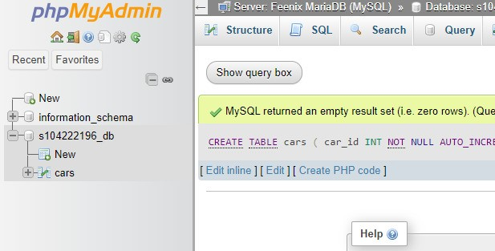
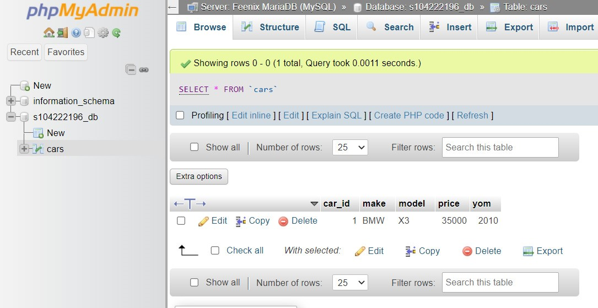
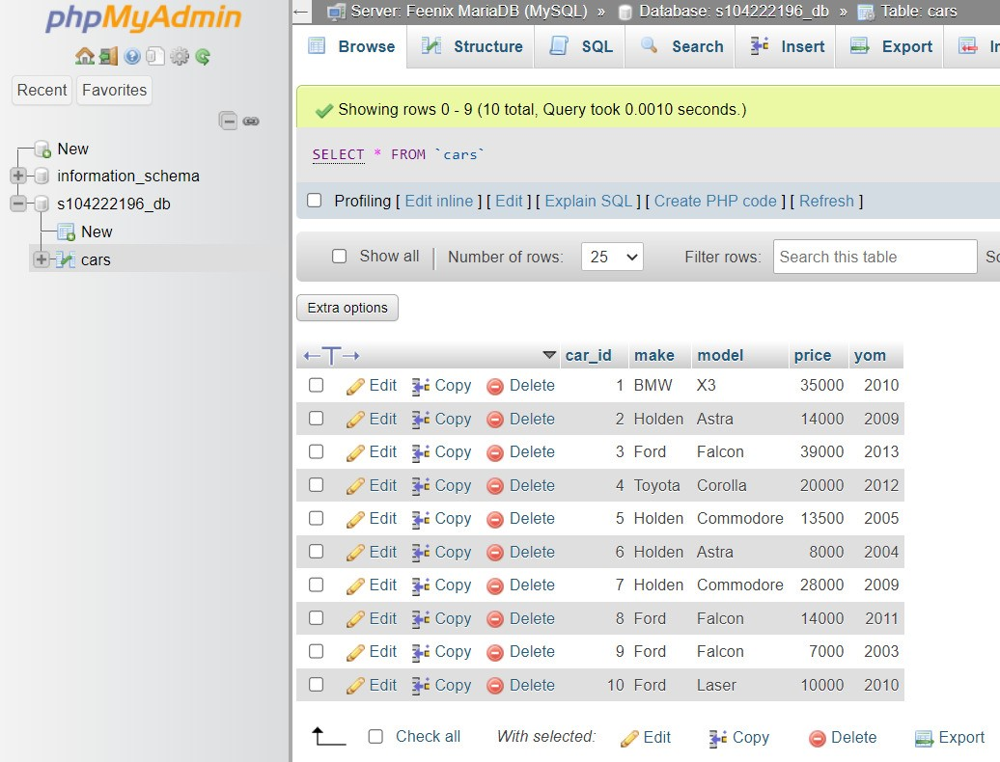

Initially, the database s104222196_db is empty, as can be seen in this picture.
Running the below query creates a table named 'cars'.
CREATE TABLE cars (
car_id INT NOT NULL AUTO_INCREMENT PRIMARY KEY,
make VARCHAR(25) NOT NULL,
model VARCHAR(40) NOT NULL,
price FLOAT NOT NULL,
yom INT NOT NULL
);

Running the below query adds the first record to the table 'cars'.
INSERT INTO cars (car_id, make, model, price, yom) VALUES (NULL, 'BMW', 'X3', 35000, 2010);

Running the below query adds the rest of the data into the table.
INSERT INTO cars (car_id, make, model, price, yom) VALUES
(NULL, 'Holden', 'Astra', 14000, 2009),
(NULL, 'Ford', 'Falcon', 39000, 2013),
(NULL, 'Toyota', 'Corolla', 20000, 2012),
(NULL, 'Holden', 'Commodore', 13500, 2005),
(NULL, 'Holden', 'Astra', 8000, 2004),
(NULL, 'Holden', 'Commodore', 28000, 2009),
(NULL, 'Ford', 'Falcon', 14000, 2011),
(NULL, 'Ford', 'Falcon', 7000, 2003),
(NULL, 'Ford', 'Laser', 10000, 2010);

Get all records and fields from the table: SELECT * FROM cars;
Select make, model, and price, sorted by make and model: SELECT make, model, price FROM cars ORDER BY make, model;
Select make and model of the cars which cost $20,000.00 or more: SELECT make, model FROM cars WHERE price >= 20000;
Get the average price of cars for similar make: SELECT AVG(price) FROM cars GROUP BY make;
Get the make and model of the cars which cost below $15,000.00: SELECT make, model FROM cars WHERE price < 15000;
Get the average price of FORD cars: SELECT AVG(price) FROM cars WHERE make = 'FORD';
Get cars manufactured in 2010 or later and costing $15,000 or more: SELECT * FROM cars WHERE yom >= 2010 AND price >= 15000;